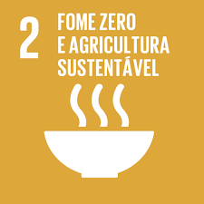
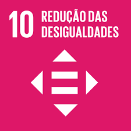
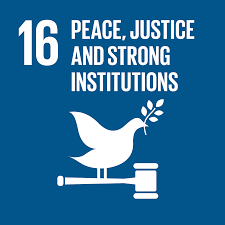
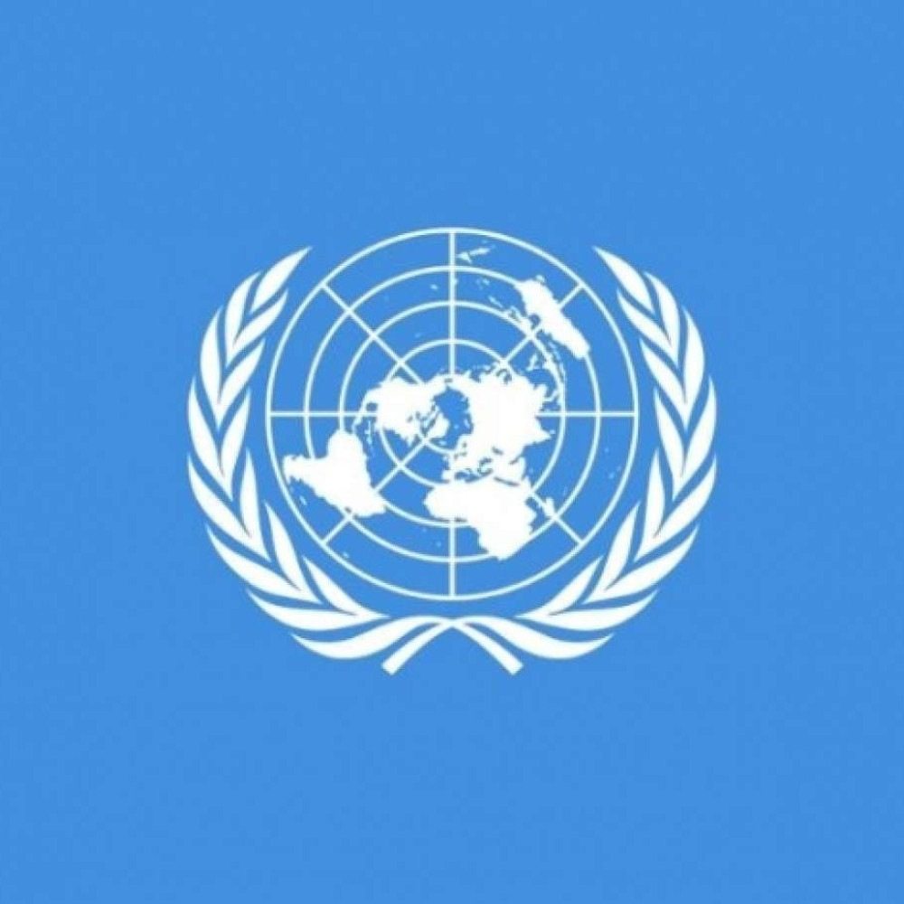

Objetivos do ODS 16
O Ods 16 visa promover sociedades pacíficas e inclusivas para o desenvolvimento sustentável, proporcionar o acesso à justiça para todos e construir instituições eficazes responsáveis e inclusivas a todos os níveis
Metas do ODS 16
- 16.1 Reduzir significativamente todas as formas de violência e as taxas de mortalidade relacionada em todos os lugares
- 16.2 Acabar com abuso, exploração, tráfico e todas as formas de violência e tortura contra crianças
- 16.3 Promover o Estado de Direito, em nível nacional e internacional, e garantir a igualdade de acesso à justiça para todos
- 16.4 Até 2030, reduzir significativamente os fluxos financeiros e de armas ilegais, reforçar a recuperação e devolução de recursos roubados e combater todas as formas de crime organizado
- 16.5 Reduzir substancialmente a corrupção e o suborno em todas as suas formas
- 16.6 Desenvolver instituições eficazes, responsáveis e transparentes em todos os níveis
- 16.7 Garantir a tomada de decisão responsiva, inclusiva, participativa e representativa em todos os níveis
- 16.8 Ampliar e fortalecer a participação dos países em desenvolvimento nas instituições de governança global
- 16.9 Até 2030, fornecer identidade legal para todos, incluindo o registro de nascimento
- 16.10 Assegurar o acesso público à informação e proteger as liberdades fundamentais, em conformidade com a legislação nacional e os acordos internacionais
- 16.a Fortalecer as instituições nacionais relevantes, inclusive por meio da cooperação internacional, para a construção de capacidades em todos os níveis, em particular nos países em desenvolvimento, para a prevenção da violência e o combate ao terrorismo e ao crime
- 16.b Promover e fazer cumprir leis e políticas não discriminatórias para o desenvolvimento sustentável
O ODS 16 tem como metas, entre outras, reduzir a violência, acabar com o tráfico de pessoas, maus-tratos e tortura de crianças, promover Estados de Direito e garantir a igualdade de acesso à justiça.
Importancia do ODS 16
A promoção da paz, justiça e instituições eficazes é fundamental para garantir o desenvolvimento sustentável. Instituições que funcionam corretamente são essenciais para a boa governança e para a construção de uma sociedade mais justa e igualitária. Sem paz e justiça, o progresso em outras áreas do desenvolvimento sustentável se torna muito mais difícil de alcançar.
Agenda 2030
A Agenda 2030 é um plano de ação global da Organização das Nações Unidas (ONU) que estabelece 17 Objetivos de Desenvolvimento Sustentável (ODS)para serem alcançados até 2030: Erradicar a pobreza, Proteger o planeta, Garantir a prosperidade para todos.
Os ODS da ONU são um conjunto de ações para acabar com a pobreza, proteger o meio ambiente e garantir que as pessoas desfrutem de paz e prosperidade. Eles definem o direcionamento e os planos de + ação que devem ser adotados pelos 193 países membros para alcançar uma série de metas e objetivos ousados para fomentar o desenvolvimento sustentável no mundo.









Líderes mundiais se reúnem na Cúpula da Paz para a Ucrânia na Suíça
Steve HollandThomas Escrittda Reuters , Estocolmo 15/06/2024 às 12:18 | Atualizado 15/06/2024 às 17:58
saiba maisRússia diz estar pronta para propostas de paz “sérias” para a Ucrânia
Da Reuters 03/05/2024 às 15:58 | Atualizado 03/05/2024 às 15:58
saiba maisHamas confirma morte de Yahya Sinwar por Israel, promete vingança e diz que não devolverá reféns até que guerra acabe
Por g1 18/10/2024 09h09 Atualizado há 4 semanas
saiba mais